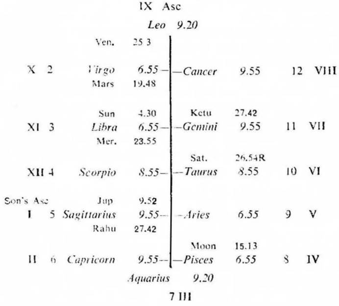
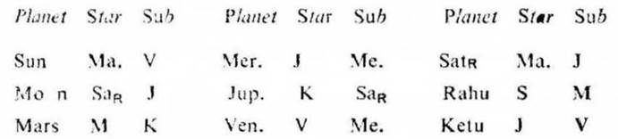

Question. My son has absconded, when will he return?
Number. 91 (out of 249)
Place of Judgment. 23°N 2′, 72°E 35′
Time of Judgment 21-10-1972, Saturday; 9-50 A.M. I.S.T.


Consider the houses 3, 9 and 12 for the missing person counting from his Asc. and the houses 2, 8 and 11 (being 12 to 3, 9 and 12) for returning homewards.
If the cuspal sublord of 12 be the significator of 3, 9 or 12 a person runs away during the joint period of the significators of 3, 9 and 12.
If the cuspal sublord of 11 be the significator of 2, 8 or 11 a person returns home during the joint period of the significators of 2, 8 and 11.
In this horary map the father asked the query about his son. So consider the 5th cusp as the Asc. of the son and proceed. For convenience the roman letter is given to each house counted from the 5th cusp.
Moon is in the star Saturn owning II and III; it is in the sub Jupiter owning and occupying the cusp of the son's Asc. So Moon is the significator of II (return of the son), III (running away of the son) and connected with the son's Asc. Hence Moon clearly shows that the query is regarding the return of the son who ran away from home.
It is jointly ruled by Venus (sign lord), Rahu (star lord) and Rahu (sub lord).
Venus is in its own star Venus owning XI and occupying IX; it is in the sub Mercury owning VII and occupying XI. So Venus is the significator of XI (reunion), IX (long tour) and connected with VII (breaking journey) and XI (reunion). This means that the son must come from long tour by breaking journey towards home for reunion.
Rahu is in the star Sun on XI cusp and in the sub Moon owning VIII. So Rahu is the significator of XI and connected with VIII. This promises the return of the son for reunion.
Son's Asc.
It is jointly operated by Jupiter (sign lord), Ketu (star lord) and Saturn (sub lord). The sign lord of the son's Asc. Jupiter is in the star Ketu in VII (being in Gemini represents Mercury in XI); it is in the sub Saturn owning II. So Jupiter is the significator of VII, XI and connected with II. Hence the son is on his way to home by breaking journey. Jupiter's sub lord Saturn being retrograde the son cannot run away but return homewards.
The star lord of the son's Asc. Ketu occupies VII; it is in the star Jupiter owning and occupying the Asc. I; it is in the sub Venus owning XI and occupying IX. So Ketu is the significator of I and connected with IX, XI and VII. Hence the son is on his way to home from long tour by breaking journey.
The sub lord of the son's Asc. Saturn owns II; it is in the star Mars owning XII; it is in the sub Jupiter owning and occupying the Asc. I. So it is the significator of XII and connected with I. This means that the son had run away from home at the time of judgment.
As Saturn is retrograde the son cannot abscond any further, but he must turn back.
The sub lord of both these cusps is also Venus which is the significator of XI as previously discussed.
Thus XI cusp, the son's Asc., II and VIII cusps all promise return of the son for reunion.
At the time of judgment (Saturn Dasha balance 2Y 0M 24D) the querent's son is running the joint period of Saturn, Jupiter, Saturn and Ketu which expires on 27-10-1972.
These joint period rulers are the significators of II and XI and they are the cuspal joint rulers of the son's Asc.
Saturn the sub lord of the son's Asc. and the inter period ruler is retrograde. So the son is returning homewards from long tour as indicated by Ketu the sookshma period ruler as previously discussed.
After Ketu the sookshma period of Venus follows from 27-10-1972 and lasts upto 21-11-1972. Venus is the strong significator of XI as already mentioned in the earlier paragraphs. Moreover, it is the star lord of XI cusp and the sub lord of II and VIII. So the querent's son must return home during the joint period of Saturn, Jupiter, Saturn and Venus.
It was learnt from the querent that his son returned home on 2-11-1972 Thursday at 11-45 A.M. I.S.T.. At this time Sun was transiting in Libra 16° 33′ in the sub Venus (the sookshma period ruler); Moon in Virgo 4° 28′ in the sub Saturn (the period and inter period ruler); and Venus in Virgo 9° 9′ in its own sub Venus.